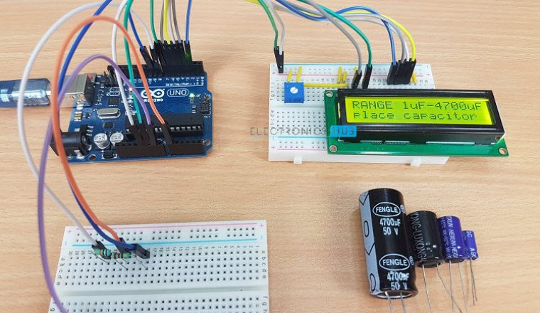
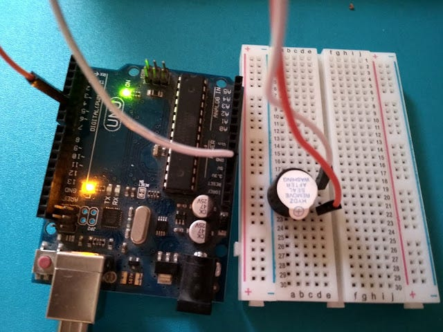

PROJECTS BY OUR STUDENTS:
-
ARDUINO PROJECTS:
All Projects are Headed by the SITU Lab,Francis Masanja(a.k.a Arduino!) as the Arduino programmer(main). Arduino boards are used in a wide variety of projects, including robotics, home automation, wearable technology, and art installations. The platform is popular because of its low cost, ease of use, and large community of users who share their projects and knowledge online. Scroll below to preview briefly some of the Arduino based projects.
-

ARDUINO- WATER LEVELLING SYSTEM:
This project mainly solves the problem of the unawarness of the level of water in our local storage tanks, which leads to an unexpected water shortage in the household. With this project(prototype) the users get a real time data visualization of the level of water in the tanks, whereas the arduino device detects the water level, displays ther water volume in the tanks in real time. When the water level drops, the arduino device alerts the users of the water shortage and the users get to decide on the condition as soon as possible.
-
ARDUINO-BIOMETRIC SENSOR PROJECT:
Aimed to solve the difiiculties in taking attendance using names list(which actually takes alot of time to finish, with low accuracy in the arrival and departure time), the biometric sensor project comes to digitize such axctivity, whereas the students have to attend a specific activity, such as classroom & laboratory while having allowed by the biometric sensor, that identifies aech student by their fingerprint recognition then allows them to enter into the rooms only when their early to arrive in their particular activities. This facilitates punctuality and discipline to students.
-

ARDUINO-LIFI PROJECT:
In the process of advancing the internet connectivity speed, Light Fidelity(LIFI) project provides the 'Light' of such process. The system mainly uses an Arduino-WIFI model that utilizes Light's speed for faster internet connectivity of up to 1000mb/s(1gb/s), which entails faster online activities for effective productivity in various associated fields in computong and the web.
-

ARDUINO-SOIL MOISTURE SENSOR PROJECT:
Currently, we do not have a readily applicable technology that can help farmers to aid their crops' growth by digitally controlling the amount of soil moisture in the farms. This project helps the farmers to have a real time data visualization of the available amount of moisture in the farm's soil and control the amount of moisture nt he soil, simultaneously. This further makes the farming activities more effective and yield more crops after cultivation.